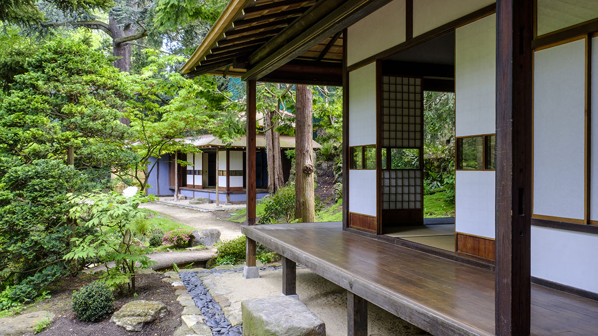
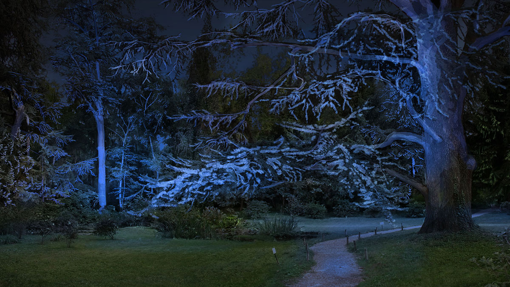

Le jardin à scènes conçu entre 1895 et 1920 par Albert Kahn et son chef jardinier Louis Picart, est aujourd'hui un témoignage exceptionnel de l'art horticole au tournant du 20e siècle.
Albert Kahn se consacre à sa passion pour l’art du jardin lorsqu’il devient propriétaire de son hôtel particulier situé 6 quai du 4-Septembre, en 1895.
Jusqu’en 1910, il constitue le terrain de son jardin en achetant progressivement une vingtaine de parcelles, rassemblées sur près de quatre hectares. Cette démarche conduit à la création d’un genre bien particulier au XIXe siècle : le parc dit « à scènes ». Chaque scène est une référence à un courant de l’art des jardins, complété selon les goûts et la sensibilité personnels d'Albert Kahn. Le style « régulier » dans le jardin français réalisé par les célèbres paysagistes Duchêne, le style « paysager » dans le jardin anglais, la mode du « japonisme » dans le jardin japonais ou encore une "scène sylvestre" dans la forêt vosgienne, évocation du paysage natal d'Albert Kahn. Ce jardin est le pendant végétal de l’œuvre du banquier.
Le mélange harmonieux d'essences végétales et florales issues des quatre coins du monde résonne avec l'idéal de paix universelle soutenu tout au long de sa vie par Albert Kahn au travers de la connaissance de la diversité des cultures.
Un réaménagement respecteux du patrimoine naturel

Le Département des Hauts-de-Seine s’est engagé depuis de nombreuses années dans la restauration et la conservation du patrimoine du Jardin du musée. Les deux maisons japonaises, importées en France à la fin du XIXe siècle, ont ainsi rénovées en 2015-2016, grâce au travail de Maîtres charpentiers japonais spécialisés dans la restauration de bâtiments patrimoniaux.
Dans le cadre de la rénovation du musée, les interventions effectuées au sein du jardin, limitées au strict minimum, sont menées dans le respect des règles de préservation.
A l'instar de tout le travail de restauration entrepris depuis les années 1990 à l'appui des autochromes, elles prennent en compte les logiques paysagères dictées par l'histoire et l'esprit du lieu. L’articulation du nouveau bâtiment et du jardin anglais a été conçue dans un réel souci d’intégration. Les plantations envisagées sur ce secteur restent dans l'esprit de la scène paysagère contigüe pour assurer une continuité visuelle.
Le tracé des allées n'est absolument pas modifié. Le travail du paysagiste reste cantonné à des espaces qui ne sont pas aujourd’hui accessibles au public : l'arrière de la serre, actuellement une aire bétonnée, est qualifié en extension de la forêt vosgienne, et l'espace situé entre les différents bâtiments de l'administration, actuellement délaissé et peu entretenu, retrouve un caractère paysagé.
Un jardin sublimé par la lumière

Mise en lumière nocturne
Le Département a profité des travaux de rénovation du musée pour procéder à la mise en lumière scénographique du site en valorisant les scènes paysagères du jardin.
Pour la mise en place de cette scénographie unique, 450 projecteurs et équipements divers représentant 1827 ampoules LED basse tension sont posés. L'objectif : marquer par un tracé lumineux le futur cheminement des visiteurs entre les différents bâtiments. Sur place, outre des promenades dans les différentes scènes du jardin, on peut découvrir grâce à cette mise en valeur lumineuse une partie de la nouvelle architecture du musée avec notamment la façade du nouveau bâtiment destiné à accueillir la grande galerie d’exposition et la serre en cours de restauration.
Certains points focaux jalonnant le parcours permanent feront l’objet d’une valorisation accrue et spécifique afin de ponctuer la visite.
En guise d’exemple, la mise en valeur lumineuse du marronnier et du platane situés derrière le secteur du marais, permettra d’optimiser la perspective paysagère, de créer un point focal surprenant, et invitera le visiteur à poursuivre sa découverte des lieux. Certaines façades ou parties de façades de bâtiments jalonnant le parcours, seront également à rehausser par le biais d’un éclairage minimaliste . Il permettra de valoriser le bâti sans que ce dernier ne prenne le dessus sur le jardin environnant.
Ce parcours sera accessible aux personnes à mobilité réduite et s’organisera autour de la visite du jardin et de la découverte de l’ensemble des expositions, qu’elles soient permanentes ou non. La mise en lumière de ce parcours permettra de valoriser le lieu sans être pour autant omniprésente.
Le jardin du Musée départemental Albert-Kahn vous accueille du mardi au dimanche :
De 11h à 18h d'octobre à mars
De 11h à 19h d'avril à septembre
L'accès au jardin se fait sans réservation en semaine.L'achat du billet s'effectue sur place.Tarif plein : 4 euros / Tarif réduit : 3 eurosLa réservation est obligatoire le week-end.
Musée départemental Albert-Kahn1 rue des Abondances92100 Boulogne-Billancourt
Nous contacter
Retrouvez dans cette page, tous les moyens pour nous contacter, selon vos besoins que vous soyez un particulier, un professionnel.
Si vous souhaitez utiliser les images en haute définition ou les films des collections dans des publications, expositions ou autres productions, vous devez en faire la demande par mail à museekahn@hauts-de-seine.fr en apportant les éléments les plus complets possibles sur l’utilisation envisagée, le contexte d’exploitation et le calendrier.
Merci de bien vouloir noter que ne sommes pas actuellement en mesure de donner suite aux demandes d’images ou de films pour un usage commercial.